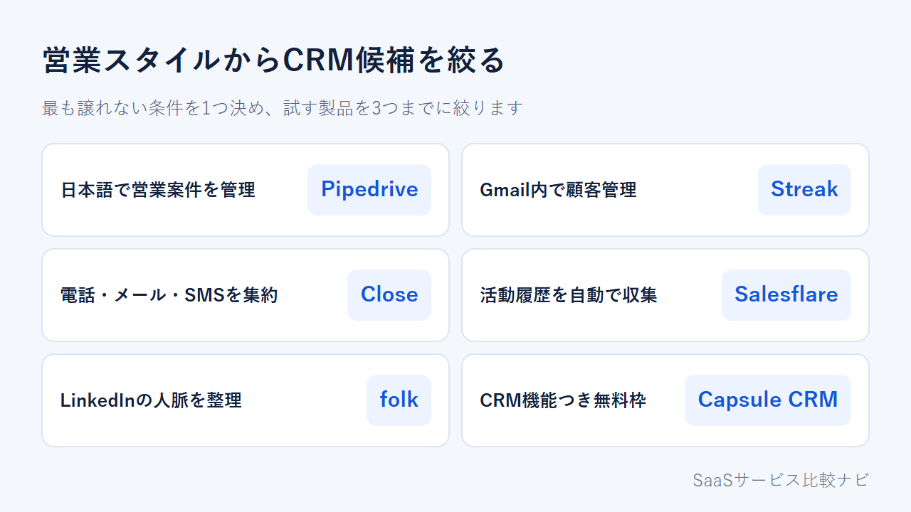
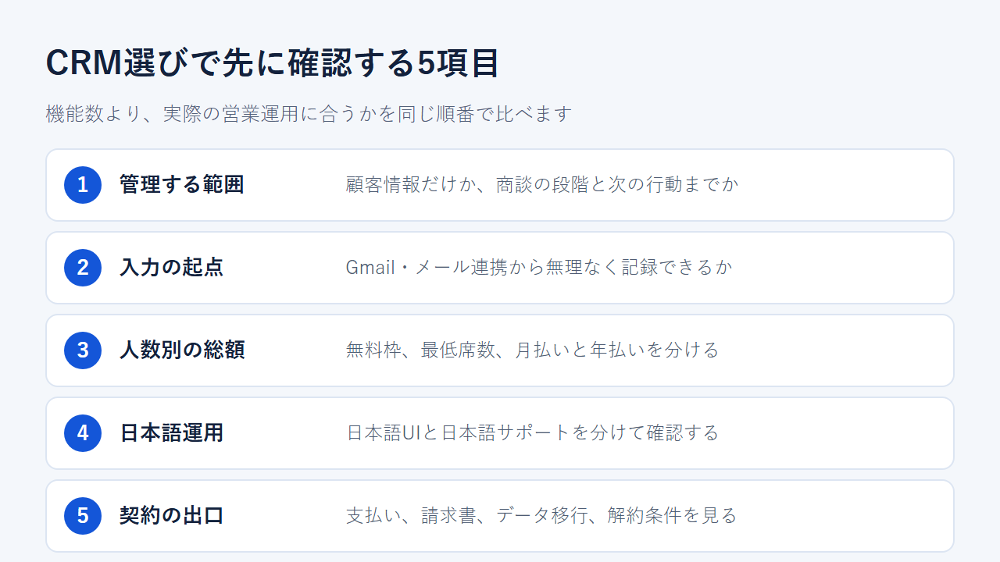
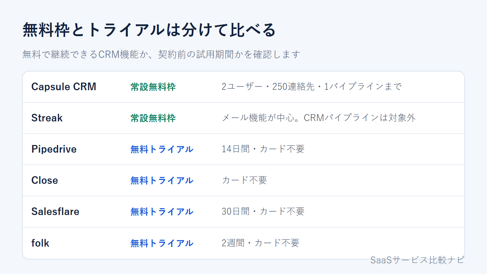

CRM比較【2026年】中小企業向け海外CRM6選｜料金・日本語・選び方
顧客情報をまとめるためにCRMを導入しても、営業担当が入力を続けられなければ定着しません。機能の多さより先に見るべきなのは、メールから記録できるか、日本語で操作できるか、人数別の総額が予算に収まるかです。
この記事では、少人数の事業者が海外ベンダーと直接契約できるCRM6製品を、順位ではなく営業スタイルと契約条件の違いで整理し、試す候補を3つまでに絞ります。日本語での導入支援、国内請求、大規模な権限設計を優先する場合は、HubSpot・Salesforce・Zoho CRMや国産CRMを先に比較してください。
結論：営業スタイルと日本語の必要性で候補を絞る
日本語で営業パイプラインを管理するならPipedrive、Gmail内で顧客情報を扱うならStreak、CRM機能を含む常設無料枠から始めるならCapsule CRMが第一候補です。 電話・メール・SMSを一か所に集めるならClose、メールや予定表からの入力を減らすならSalesflare、LinkedInからの取り込みと関係者への個別連絡を重視するならfolkも候補になります。この6製品は、少人数で海外ベンダーと直接契約する場合に絞って比べています。
- 日本語UIと視覚的な営業パイプラインを優先する：Pipedrive
- Gmail内で案件とメール履歴をまとめる：Streak
- 電話・メール・SMSを同じ顧客記録に残す：Close
- メールや予定表から顧客情報と活動履歴を自動で集める：Salesflare
- LinkedInからの取り込みと関係者への個別連絡をまとめる：folk
- CRM機能を含む無料枠から始める：Capsule CRM

日本語で営業案件を管理するならPipedrive
Pipedriveは日本語UIと日本語ヘルプがあり、カード不要で14日間試せます。商談を段階ごとに並べるパイプラインが中心で、メール同期と自動化はGrowth以上の機能です。日本語担当者による個別対応の範囲は確認できていません。
商談の段階、担当者、次の行動を登録し、営業会議で同じ情報を見られるかを確認します。
Gmail内で顧客管理を始めるならStreak
StreakはGmail内で使うCRMです。案件の段階、メール履歴、タスクを受信箱から扱え、タスクはGoogleカレンダーにも同期できます。無料プランにはメール追跡などがありますが、CRMパイプラインは含まれません。
Gmailを日々の入力起点にしたい場合は、14日間のPro+トライアルでパイプラインと自動化まで試し、無料枠との違いを見ます。
無料枠ならCapsule CRM、試用して選ぶならClose・Salesflare・folk
Capsule CRMの無料プランは最大2ユーザー、250連絡先、パイプライン1件です。Closeは電話・メール・SMSを顧客記録へ集約し、Salesflareはメールや予定表から活動履歴を取り込み、folkはLinkedInの連絡先取り込みとメール配信を備えます。この3製品は常設無料枠ではなく、カード不要のトライアルを提供しています。
無料で使い続けたいならCapsule CRMの上限を先に確認し、有料契約を前提に比較するなら残る3製品を同じ顧客データで試します。
CRMを比較するときの5つのポイント
機能数を数える前に、営業の進め方、入力経路、少人数時の総額、日本語運用、日本からの契約・解約条件を同じ順番で確認します。

顧客情報だけか、営業パイプラインまで管理するか
会社名や連絡先だけでよいのか、商談の段階と次の行動まで管理するのかを先に決めます。試用時は、パイプライン、活動履歴、自動化、レポート、権限、必要な外部連携を共通の確認項目にし、営業会議で使う項目を再現できない製品は候補から外します。
Gmail・メール連携を日々の入力起点にするか
Gmailを入力起点にするなら、Gmail内で使うStreakが比較の基準になります。ほかの5製品でメール同期を使う場合は、対応範囲を契約前に確認してください。受信メールから残す情報、同期の方向、更新担当を試用前にそろえ、同じ条件で比べます。
無料枠・最低席数・月払いと年払いを分けて見る
常設無料プランと期間限定トライアルを分け、年払い条件と最低人数を含む1人、3人、5人の総額を出します。
日本語UIと日本語サポートを分けて確認する
画面が日本語でも、ヘルプや問い合わせ対応まで日本語とは限りません。6製品のうち日本語UIを確認できたのはPipedriveだけで、日本語での個別対応の範囲は未確認です。
支払い・請求書・データ移行・解約まで確認する
カードブランド、請求通貨、請求書、自動更新日、解約後の利用期限を確認します。移行前には、取り込む項目と重複データも整理しておきます。
中小企業向け海外CRM6製品の特徴
6製品は同じCRMでも、記録の入口と営業活動の範囲が異なります。 PipedriveとCapsule CRMは視覚的な営業パイプライン、StreakはGmail、Closeは電話・メール・SMS、Salesflareは自動取り込み、folkは関係者データと個別連絡が軸です。以下では、向いている運用と契約前の注意点を製品ごとにまとめます。
Pipedrive：日本語で営業パイプラインを管理したいチーム向け
[画像を挿入: Pipedrive公式サイト]
Pipedriveには日本語UIと日本語ヘルプがあり、商談を段階ごとに動かす視覚的なパイプラインを使えます。メール同期と自動化はGrowth以上で、Liteとは機能範囲が異なります。常設無料枠はなく、カード不要で14日間試せます。日本からはUSD請求で、JCBやPayPalにも対応します。
年払い換算の料金はLiteが$14、Growthが$39、Premiumが$59、Ultimateが$79／ユーザー／月です。請求書は管理画面の履歴で確認でき、請求先メールにも届きます。
日本語の画面でパイプラインを作り、入力と営業会議の流れが合うかを確かめます。
Streak：Gmailから画面を切り替えずに管理したい人向け
[画像を挿入: Streak公式サイト]
StreakはGmail内で、案件の段階、顧客情報、メール履歴を管理します。メールは該当する案件へ記録され、タスクはGoogleカレンダーにも同期できます。無料枠はメール機能が中心で、CRMパイプラインはPro+の14日間トライアルで確認します。
Proは年払い$49、月払い$59、Pro+は$69と$89、Enterpriseは$129と$159／ユーザー／月です。JCBは公式の対応カード一覧に含まれます。PayPalは同一覧に記載がなく、対応可否を確認できません。公式情報では、日本語UIと日本語での個別サポートも確認できていません。
無料のメール機能だけで足りるのか、営業案件を管理するために有料プランが必要なのかを切り分けてください。
Close：1人または少人数で営業活動をまとめたい人向け
[画像を挿入: Close公式サイト]
Closeは電話・メール・SMS・タスク・商談を同じ顧客画面にまとめます。Essentialsにはメール、通話、SMS、共有受信箱が含まれ、定型フォローを自動化するWorkflowはGrowth以上、役割別の権限設定はScaleの機能です。Soloは1ユーザー限定で、リードは最大1万件まで。常設無料枠はなく、カード不要で14日間試せます。
Soloは年払い$9、月払い$19／月で、Essentialsは年払い$35、月払い$49／ユーザー／月です。解約後も請求期間末まで使えます。30日間返金保証の対象条件は申し込み前に確認します。
1人ならSolo、複数人ならEssentials以上を起点にし、人数変更後の総額まで計算して選びます。
Salesflare：30日間の試用で英語運用を判断したいチーム向け
[画像を挿入: Salesflare公式サイト]
Salesflareはメール、メール署名、予定表などから顧客・会社情報を集め、会議や通話を活動履歴へ記録します。Growthでもメール開封・リンク・Web訪問の追跡とGmail・Outlook・LinkedInのサイドバーを使え、権限設定、複数段階のメールワークフロー、カスタマイズできるレポートはProの機能です。常設無料枠はなく、カード不要で30日間試せます。公式対応の7言語に日本語は含まれません。
Growthは年払い$29、月払い$39、Proは$49と$64、Enterpriseは$99と$124／ユーザー／月です。Enterpriseは最低5ユーザーです。PDF請求書は取得できますが、日本発行カードが使えるか、日本語での個別サポートがあるかは確認できていません。
手入力を減らし、メールや予定表を起点に活動履歴をそろえたいチームに向きます。試用中は、自動で作成された顧客情報の精度と、Growthのレポートで足りるか、Proの権限設定やワークフローが必要かを英語UIで確かめます。
folk：軽量な顧客・関係者管理から始めたい人向け
[画像を挿入: folk公式サイト]
folkのStandardには、営業パイプライン、メール配信、連絡先情報の補完、LinkedIn用拡張機能、メール・予定表・WhatsAppの同期が含まれます。Premiumでは、複数段階のメール送信、役割設定、独自の取引・オブジェクト管理が加わります。常設無料枠はなく、Premium機能をカード不要で2週間試せます。試用終了後は契約するまでアカウントがブロックされますが、1週間の延長を申請できます。
Standardは年払い$24、月払い$30、Premiumは$48と$60、Enterpriseは$80からと$100から／メンバー／月です。請求履歴は管理画面とメールで確認できます。公式情報では、日本語UI、日本語での個別サポート、JCBの可否を確認できていません。
LinkedInから集めた人脈を整理し、個別メールまで同じ場所で進めたい人に向きます。試用中は、Standardのパイプラインと一斉メールで足りるか、Premiumの取引管理、メールシーケンス、役割設定まで必要かを見極めます。
Capsule CRM：2人までの無料枠から始めたいチーム向け
[画像を挿入: Capsule CRM公式サイト]
Capsule CRMは連絡先、タスク、予定、商談をまとめ、カンバン形式のパイプラインで案件を動かせます。最大2ユーザー、250連絡先、カスタムフィールド5件、1パイプラインまで無料で、有料プランはカード不要で14日間試せます。複数パイプラインと営業自動化はGrowth以上です。
年払い換算はStarter $18、Growth $36、Advanced $54／ユーザー／月で、Ultimateは要問い合わせです。支払いはVisa、Mastercard、American Expressに対応し、JCBは公式一覧にありません。画面は日本語に対応していません。
まず2人・250連絡先・1パイプラインで運用し、どの上限に達したら有料化するかを決めておきます。
料金は1人・3人・5人の総額と無料条件で比べる
1人・3人・5人の総額を、月払いと年払い、無料枠や試用期間に分けて比べます。 以下の円換算は1ドル=159円でそろえた月額の目安です。為替で変わるため、契約時にはUSDの請求額も確認してください。
常設無料プランと期間限定トライアルを分ける
- Pipedrive：常設無料枠なし。カード不要の14日間トライアル
- Streak：無料枠あり。ただしCRMパイプラインなし。Pro+は14日間トライアル
- Close：常設無料枠なし。カード不要の14日間無料トライアル
- Salesflare：常設無料枠なし。カード不要の30日間トライアル
- folk：常設無料枠なし。カード不要の2週間トライアル
- Capsule CRM：2ユーザー、250連絡先、1パイプラインまで無料。有料プランは14日間トライアル
月払いと年払いで1人・3人・5人の総額を出す
- Pipedrive Lite：年払い換算は1人$14（約2,226円）、3人$42（約6,678円）、5人$70（約11,130円）／月。月払いは$24（約3,816円）、$72（約11,448円）、$120（約19,080円）／月
- Streak Pro：年払い換算は1人$49（約7,791円）、3人$147（約23,373円）、5人$245（約38,955円）／月。月払いは$59（約9,381円）、$177（約28,143円）、$295（約46,905円）／月
- Close：1人限定のSoloは年払い換算$9（約1,431円）、月払い$19（約3,021円）／月。Essentialsは3人なら年払い換算$105（約16,695円）、月払い$147（約23,373円）／月、5人なら$175（約27,825円）と$245（約38,955円）／月
- Salesflare Growth：年払い換算は1人$29（約4,611円）、3人$87（約13,833円）、5人$145（約23,055円）／月。月払いは$39（約6,201円）、$117（約18,603円）、$195（約31,005円）／月
- folk Standard：年払い換算は1人$24（約3,816円）、3人$72（約11,448円）、5人$120（約19,080円）／月。月払いは$30（約4,770円）、$90（約14,310円）、$150（約23,850円）／月
- Capsule CRM Starter：年払い換算は1人$18（約2,862円）、3人$54（約8,586円）、5人$90（約14,310円）／月。月払いは$21（約3,339円）、$63（約10,017円）、$105（約16,695円）／月
最低ユーザー数・請求通貨・返金条件を確認する
料金はUSD表示が基準で、folkはEUR、Capsule CRMはGBPとEURも選べます。Salesflare Enterpriseは最低5ユーザー、CloseのSoloは1ユーザー限定です。年払い換算は月当たりの比較値なので、契約時には実際の請求周期と一度に支払う範囲を分けて確認します。
Pipedriveの年払い未使用期間、Salesflareの過去請求、folkの支払済み料金は返金されません。Streakの返金は同社の裁量で、月払いは14日以内、年払いは30日以内に申請資格があります。Closeには30日間返金保証があります。
Liteの年払い換算額と請求周期を人数別に確認します。
無料枠とPro、Pro+の機能差を確認します。
Soloと複数人向けプラン、返金条件を確認します。
30日間の試用条件とEnterpriseの最低人数を確認します。
試用終了後の条件と請求周期を確認します。
無料枠の上限と有料化する人数を確認します。
日本から契約するときは日本語・支払い・請求書を確認する
日本語UI、日本語ヘルプ、日本語での個別対応は別物です。 支払いブランド、請求通貨、請求書の取得方法も製品ごとに分けて確認します。
日本語UIを確認できるのはPipedrive
Pipedriveは日本語UIと日本語ヘルプを提供しますが、日本語での個別対応範囲は確認できていません。SalesflareとCapsule CRMは公式対応言語に日本語を含みません。Streak、Close、folkは、日本語UIと日本語での個別サポートのどちらも公式情報で確認できません。
日本発行カード・JCB・PayPalの可否を分けて見る
- Pipedrive：日本ではUSD請求。JCBとPayPalを含む主要な支払い方法に対応
- Streak：JCBを含む主要カードに対応。PayPalは公式の対応一覧に記載がなく、可否は確認不能
- Close：カードなどを利用可能。対応ブランドとJCBの可否は確認不能
- Salesflare：カード、口座振替、銀行振込などを利用可能。日本発行カードとJCBの可否は確認不能
- folk：クレジットカードのみ。対応ブランドとJCBの可否は確認不能
- Capsule CRM：Visa、Mastercard、American Expressに対応。JCBは公式一覧になし
請求書の取得方法と税務処理を確認する
Pipedrive、Close、Salesflare、folk、Capsule CRMは管理画面やメールで請求情報を確認できます。Streakのセルフサービス契約で請求書を取得できるかは未確認です。税務上の扱いは、必要に応じて税理士に確認してください。
画面が日本語かどうかだけで決めず、USD請求、利用するカード、請求書の保存方法まで一緒に確認します。
無料で始めるなら「CRM機能が使えるか」まで確認する
Capsule CRMにはCRM機能を含む常設無料枠がありますが、Streakの無料枠にはCRMパイプラインが含まれません。 残る4製品は期間限定の無料トライアルなので、無料で使い続けられる製品とは分けて考えます。

CRM機能を無料で続けられるCapsule CRM
Capsule CRMの無料枠は最大2ユーザー、250連絡先、カスタムフィールド5件、1パイプラインです。いずれかを超えたら有料プランを検討します。
無料枠へ少量の顧客データを入れ、人数、連絡先、パイプラインのどれが最初に上限へ達するかを確認します。
Streakの無料枠はメール機能が中心
Streakの無料枠はメール追跡、スニペット、1日50通までのメール差し込みなどが中心です。CRMパイプラインは含まれず、Capsule CRMと同じ無料条件ではありません。
Pipedrive・Close・Salesflare・folkはトライアルで判断する
試用期間はPipedriveとCloseが14日間、Salesflareが30日間、folkが2週間です。同じ顧客と案件を登録し、パイプライン、活動履歴、自動化、レポート、権限、必要な連携を同じ順番で確かめます。
Pipedriveはカード不要の14日間で日本語UIとパイプライン運用を確認し、終了前に継続の要否を決めます。
導入前にデータ移行・定着・解約を確認する
契約前に顧客データの整理、入力ルール、自動更新日、解約前の書き出しを決めます。 製品の機能不足だけでなく、重複データや更新担当の不在もCRMが定着しない原因になります。
CSV移行前に重複と必須項目を整理する
会社名、担当者名、メール、商談段階などの必須項目を決め、重複を除きます。CSVを使えるとは限らないため、契約前に各製品の取り込み方法と対応項目を確認します。移行できる場合も、少量で文字化けや空欄を確かめてから本移行へ進みます。
メール同期・権限・退職者アカウントの運用を決める
メール同期や権限機能が必要なら、各製品の対応可否を契約前に確認します。そのうえで、同期対象、項目を変更する人、退職者の情報を引き継ぐ人を決め、試用中は実際に近い数件で日常の更新手順を再現します。
解約・ダウングレード前にデータを書き出す
書き出し機能の有無や対象データは製品ごとに確認し、解約前に保存を終えます。Pipedrive、Close、Salesflare、folkは請求期間末まで利用できます。Streakは管理画面から自動更新を停止できます。Capsule CRMは解約後にアクセスできず、14日間の復元期間後にデータが削除されます。
請求期間末と解約後のデータ削除時期を確認します。
契約周期、自動更新日、解約経路を確認します。
Billingの解約経路と書き出し担当を決めます。
チャットかメールで連絡する期限を決めます。
Plansから解約し、期間末までに情報を保存します。
解約前に必要なデータを書き出します。
CRM選びでよくある質問
無料、CRMとSFA・MAの違い、国内大手との比較で残りやすい疑問を整理します。
無料で使い続けられるCRMはある？
常設無料枠でCRMパイプラインを使える候補はCapsule CRMです。Streakの無料枠はメール機能が中心で、ほかの4製品は期間限定トライアルのため、「無料で継続」と「契約前の試用」を分けてください。
CRMとSFA・MAの違いは？
CRMは顧客情報、SFAは商談や営業活動、MAは見込み客への働きかけの管理が中心です。機能は重なるため、どこまで一つにまとめるかで選びます。
HubSpotや国産CRMも一緒に比べるべき？
日本語での導入支援や国内向けの請求、大規模な権限設計を優先するなら、HubSpot・Salesforce・Zoho CRMや国産CRMを先に比較します。本記事の6製品は、少人数で海外ベンダーと直接契約する場合の候補です。
まとめ：候補を3つに絞り、無料枠かトライアルで確かめる
日本語ならPipedrive、Gmail内運用ならStreak、無料継続ならCapsule CRMを起点にします。 1人営業ならCloseを加えます。Salesflareとfolkは、英語での運用で困らず、必要な機能を試用中に確かめられる場合だけ候補へ残し、全体を3製品までに絞ります。
優先条件を1つ決める
日本語、Gmail、無料継続、1人営業、英語運用から譲れない条件を1つ選び、誰が何を入力するかを決めます。
候補を3製品までに絞る
- 日本語を優先：Pipedrive
- Gmail内で完結：Streak
- 無料で継続：Capsule CRM
- 1人営業：Close
- 英語運用を試す：Salesflareまたはfolk
同じデータと運用期間で試す
同じ顧客と案件で入力から営業会議まで試します。終了日、自動更新日、人数別総額を記録し、1製品に決めてから本移行します。
日本語UIなら14日間のトライアルから始めます。
Gmail内運用なら無料枠とPro+の差を確認します。
1人ならSolo、増員予定ならEssentials以上を比べます。
英語UIを30日間のトライアルで判断します。
2週間で顧客・関係者の必要項目を作ります。
2人・250連絡先・1パイプラインなら無料で始められます。